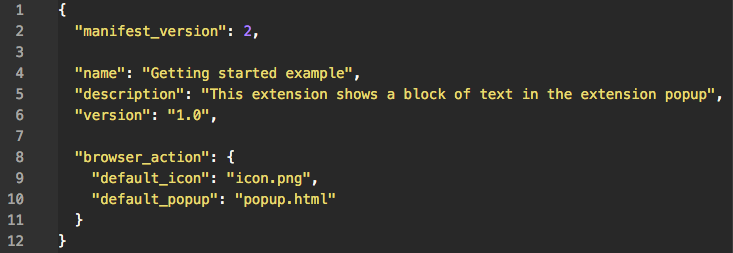
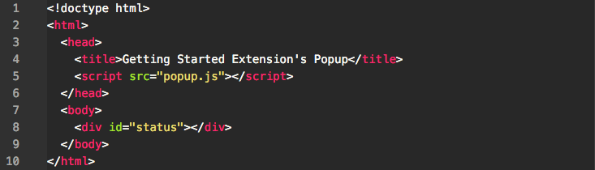
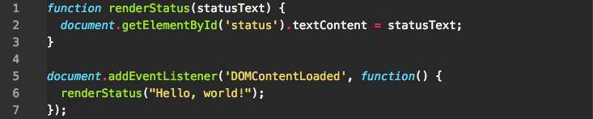

The quick and easy guide for amateur developers
Here is a high level overview of the steps necessary for creating a Chrome extension:
We'll go into a bit more detail for each of these steps. Moving on!
There are a few things necessary for making our Chrome extension, which will be an icon that, when clicked, displays a popup of text. They are:
The directory will contain all of these files, the purposes of which will be explained later. Once you create all of these things, move to the next step.
In your preferred text editor, open up your manifest.json file and add the following lines:
So what are these lines for? They simply provide the basic information about our extension. You can probably guess what the name, description, and version keywords are for.
Within the browser_action, we specify the default_icon to be icon.png. This denotes the icon that will show up in our toolbar in Chrome when we load our extension. You'll want to create an image in this directory called icon.png for this purpose. A small image, say 20x20 pixels, would be sufficient. Alternatively, you can use this one here.
The actual structure of our popup will go in the popup.html file. Copy the following code into it:
If you're familiar with HTML, you'll recognize this as the standard skeleton for a webpage. The only notable addition we're interested in is the div with id status. Don't forget to link the popup.js file in line 5!
So where does the logic for our little popup go? That's where the popup.js file comes in. Add the following code to it:
The logic for our popup is very simple. We have a convenience function starting at line 1 that will render text on our popup.
On line 5 we create a listener which will run when we run our extension. In other words, when we click the icon for our extension, the code within this listener will run. So, it will execute renderStatus("Hello, world!").
Now that we have all the required pieces for our extension, we'll want to test it out! This requires loading it into Chrome. To do so:
If the extension is valid, it'll be loaded up and active right away! If it's invalid, an error message will be displayed at the top of the page.
Now that you've learned the basic structure of a Chrome Extension, it's time to move on to bigger and better things. Here are some suggestions for where to move next: